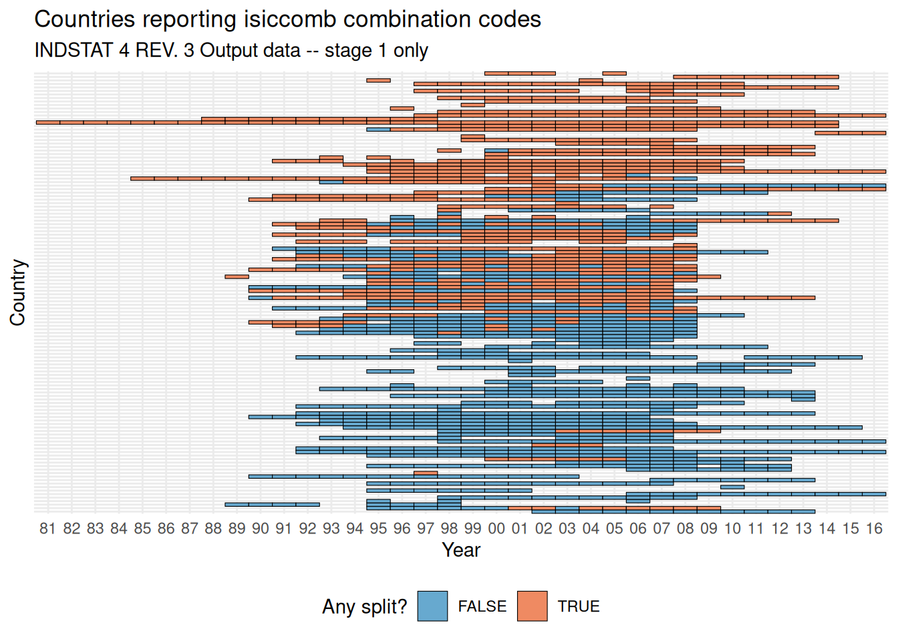
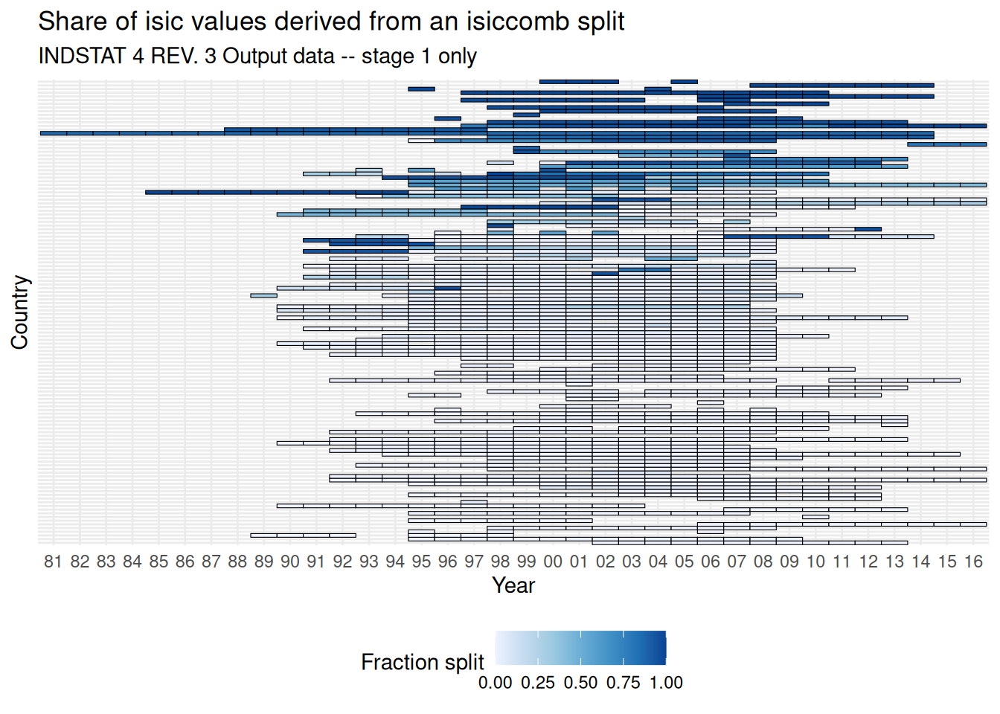
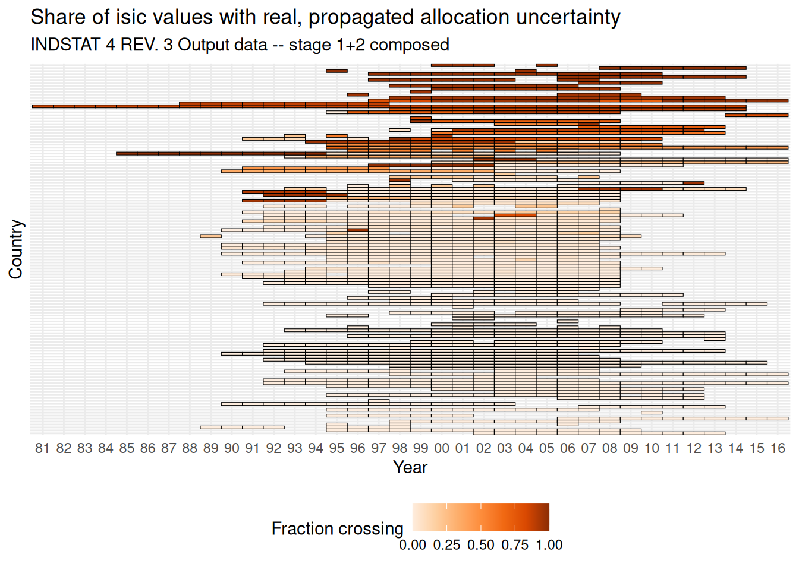

Code
library(tidyverse)
library(here)Two different questions, at two different stages of the transformation:
isic value touched by an isiccomb split at all? This only looks at isiccomb -> isic in isolation – it has no notion of isic.3 and can’t distinguish a split that’s harmless from one that isn’t.isic -> isic.3 aggregation, does the combined transformation actually cross an isic.3 boundary? A split whose children all reconverge into the same isic.3 parent is imputed at the 4-digit level but exact at 3-digit and coarser (the 1/n weights cancel out on re-aggregation); a split whose children land in different isic.3 parents carries real, propagated allocation uncertainty. Only the second kind should really count as “consequential” imputation exposure. This is the same distinction the node-link diagrams in Explorer/ Country variants show per component (a reconvergent vs. diverging fan of dashed split edges); this page shows its coverage-level rollup.Reads the crossmap collection prepared by Extraction – render that page first if data/interim/crossmap_collection.rds is missing or stale.
crossmap_collection <- readRDS(here("data", "interim", "crossmap_collection.rds"))
tile_any_split <- crossmap_collection$tile_any_split
tile_frac_split <- crossmap_collection$tile_frac_split
tile_frac_split_crossing <- crossmap_collection$tile_frac_split_crossing
ctr_codes <- crossmap_collection$ctr_codesAll three tiles below share one country ordering – by each country’s overall (all-years-pooled) fraction of isic values in a crossing component, weighted by volume (sum(n_crossing) / sum(n_isic), not a plain per-year average, so a country’s one thin reporting year can’t skew its rank) – rather than each plot re-sorting on its own metric. That keeps a given row meaning “this country” consistently across all three figures, so you can read the same row down the page and see stage-1 coverage vs. stage-1+2 consequential coverage for the same country side by side.
Two views of the same underlying fact, at different resolutions: the binary tile is a strict coarsening of the continuous one (any_split == (frac_split > 0)) – read them as a pair, binary for “where does this even come up,” continuous for “how much does it matter there.”
tile_any_split |>
left_join(ctr_codes, by = c("country" = "code")) |>
mutate(country = factor(country, levels = country_order)) |>
ggplot(aes(x = as.factor(year), y = country, fill = any_split)) +
geom_tile(color = "black") +
scale_x_discrete(labels = ~ str_sub(.x, -2)) +
scale_fill_manual(values = c("TRUE" = "#ef8a62", "FALSE" = "#67a9cf")) +
theme_minimal() +
theme(legend.position = "bottom", axis.text.y = element_blank()) +
labs(
x = "Year", y = "Country", fill = "Any split?",
title = "Countries reporting isiccomb combination codes",
subtitle = "INDSTAT 4 REV. 3 Output data -- stage 1 only"
)
tile_frac_split |>
left_join(ctr_codes, by = c("country" = "code")) |>
mutate(country = factor(country, levels = country_order)) |>
ggplot(aes(x = as.factor(year), y = country, fill = frac_split)) +
geom_tile(color = "black") +
scale_x_discrete(labels = ~ str_sub(.x, -2)) +
scale_fill_distiller(palette = "Blues", direction = 1) +
theme_minimal() +
theme(legend.position = "bottom", axis.text.y = element_blank()) +
labs(
x = "Year", y = "Country", fill = "Fraction split",
title = "Share of isic values derived from an isiccomb split",
subtitle = "INDSTAT 4 REV. 3 Output data -- stage 1 only"
)
frac_split_crossing shares frac_split’s denominator (fraction of a country-year’s isic values) but restricts the numerator to values whose combo group crosses an isic.3 boundary – i.e. it’s the “consequential” subset of stage 1’s coverage, once the second stage is accounted for: frac_split = frac_split_reconverging + frac_split_crossing.
tile_frac_split_crossing |>
left_join(ctr_codes, by = c("country" = "code")) |>
mutate(country = factor(country, levels = country_order)) |>
ggplot(aes(x = as.factor(year), y = country, fill = frac_split_crossing)) +
geom_tile(color = "black") +
scale_x_discrete(labels = ~ str_sub(.x, -2)) +
scale_fill_distiller(palette = "Oranges", direction = 1) +
theme_minimal() +
theme(legend.position = "bottom", axis.text.y = element_blank()) +
labs(
x = "Year", y = "Country", fill = "Fraction crossing",
title = "Share of isic values with real, propagated allocation uncertainty",
subtitle = "INDSTAT 4 REV. 3 Output data -- stage 1+2 composed"
)
How much of stage 1’s coverage is actually consequential, in aggregate across the whole dataset:
overall <- tile_frac_split |>
left_join(tile_frac_split_crossing |> select(country, year, frac_split_crossing),
by = c("country", "year")
) |>
summarise(
total_isic = sum(n_isic),
total_split = sum(n_split),
total_crossing = sum(round(frac_split_crossing * n_isic)),
)
overall |>
mutate(
pct_of_all_isic_split = 100 * total_split / total_isic,
pct_of_all_isic_crossing = 100 * total_crossing / total_isic,
pct_of_split_that_crosses = 100 * total_crossing / total_split
)# A tibble: 1 × 6
total_isic total_split total_crossing pct_of_all_isic_split
<int> <int> <dbl> <dbl>
1 151833 19185 17080 12.6
# ℹ 2 more variables: pct_of_all_isic_crossing <dbl>,
# pct_of_split_that_crosses <dbl>Aggregating (all years pooled, volume-weighted – same approach as country_order above) down to one row per country makes it possible to ask directly: for which reporters is stage-1 frac_split mostly noise (reconvergent diamonds), and for which is it mostly signal (genuine crossing)? Restricted to countries with at least 5 split rows pooled across all their years, so a single small sample can’t produce a misleadingly clean 0% or 100%.
country_split_summary <- tile_frac_split |>
left_join(tile_frac_split_crossing |> select(country, year, n_crossing),
by = c("country", "year")
) |>
left_join(ctr_codes, by = c("country" = "code")) |>
group_by(country, name) |>
summarise(
n_years = n(),
total_split = sum(n_split),
total_crossing = sum(n_crossing),
.groups = "drop"
) |>
mutate(
total_reconverging = total_split - total_crossing,
pct_split_reconverging = 100 * total_reconverging / total_split
) |>
filter(total_split >= 5)Ranked by absolute overstatement: how much stage-1 coverage this country would report vs. how much of that is actually consequential (largest gap first – i.e. the countries where looking only at the first tile above would mislead you the most):
country_split_summary |>
left_join(
tile_frac_split |> group_by(country) |> summarise(total_isic = sum(n_isic), .groups = "drop"),
by = "country"
) |>
mutate(
frac_split = total_split / total_isic,
frac_crossing = total_crossing / total_isic,
gap = frac_split - frac_crossing
) |>
arrange(desc(gap)) |>
transmute(
country, name, n_years, total_split, total_reconverging,
pct_split_reconverging = round(pct_split_reconverging, 1),
frac_split = round(frac_split, 3),
frac_crossing = round(frac_crossing, 3),
gap = round(gap, 3)
) |>
head(15) |>
knitr::kable()| country | name | n_years | total_split | total_reconverging | pct_split_reconverging | frac_split | frac_crossing | gap |
|---|---|---|---|---|---|---|---|---|
| 764 | Thailand | 5 | 203 | 125 | 61.6 | 0.307 | 0.118 | 0.189 |
| 196 | Cyprus | 9 | 280 | 198 | 70.7 | 0.219 | 0.064 | 0.155 |
| 470 | Malta | 14 | 464 | 274 | 59.1 | 0.262 | 0.107 | 0.155 |
| 288 | Ghana | 1 | 26 | 12 | 46.2 | 0.313 | 0.169 | 0.145 |
| 858 | Uruguay | 9 | 231 | 94 | 40.7 | 0.259 | 0.154 | 0.105 |
| 428 | Latvia | 18 | 290 | 247 | 85.2 | 0.119 | 0.018 | 0.102 |
| 646 | Rwanda | 1 | 36 | 4 | 11.1 | 0.878 | 0.780 | 0.098 |
| 590 | Panama | 11 | 150 | 88 | 58.7 | 0.153 | 0.063 | 0.090 |
| 376 | Israel | 16 | 656 | 96 | 14.6 | 0.599 | 0.511 | 0.088 |
| 231 | Ethiopia | 24 | 253 | 207 | 81.8 | 0.073 | 0.013 | 0.060 |
| 275 | State of Palestine | 16 | 675 | 69 | 10.2 | 0.579 | 0.520 | 0.059 |
| 642 | Romania | 19 | 455 | 104 | 22.9 | 0.239 | 0.184 | 0.055 |
| 032 | Argentina | 10 | 234 | 36 | 15.4 | 0.327 | 0.277 | 0.050 |
| 332 | Haiti | 10 | 395 | 20 | 5.1 | 0.929 | 0.882 | 0.047 |
| 242 | Fiji | 3 | 6 | 6 | 100.0 | 0.045 | 0.000 | 0.045 |
Ranked by share of splitting that’s reconvergent, i.e. “lots of reconvergent diamonds” directly – countries at 100% have zero real crossing exposure despite a non-trivial frac_split:
| country | name | n_years | total_split | total_reconverging | pct_split_reconverging |
|---|---|---|---|---|---|
| 031 | Azerbaijan | 15 | 16 | 16 | 100.0 |
| 170 | Colombia | 13 | 36 | 36 | 100.0 |
| 242 | Fiji | 3 | 6 | 6 | 100.0 |
| 360 | Indonesia | 12 | 28 | 28 | 100.0 |
| 428 | Latvia | 18 | 290 | 247 | 85.2 |
| 231 | Ethiopia | 24 | 253 | 207 | 81.8 |
| 458 | Malaysia | 9 | 64 | 52 | 81.2 |
| 196 | Cyprus | 9 | 280 | 198 | 70.7 |
| 764 | Thailand | 5 | 203 | 125 | 61.6 |
| 470 | Malta | 14 | 464 | 274 | 59.1 |
| 590 | Panama | 11 | 150 | 88 | 58.7 |
| 040 | Austria | 19 | 152 | 80 | 52.6 |
| 288 | Ghana | 1 | 26 | 12 | 46.2 |
| 372 | Ireland | 18 | 157 | 72 | 45.9 |
| 250 | France | 18 | 22 | 10 | 45.5 |